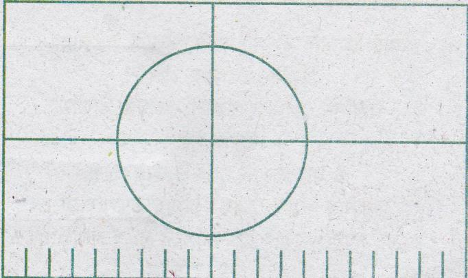

পতাকা নির্মাণের নিয়মাবলি

দৈর্ঘ্য ও প্রস্থের অনুপাত ১০:৬। অর্থাৎ যদি দৈর্ঘ্য ৩০৫ সেমি (১০ ফুট) হয়, প্রস্থ ১৮৩ সেমি (৬ ফুট) হবে। লাল বৃত্তটির ব্যাসার্ধ পতাকার দৈর্ঘ্যের পাঁচ ভাগের এক ভাগ। পতাকার দৈর্ঘ্যের ২০ ভাগের ৯ ভাগে একটি লম্ব (খাড়া সরলরেখা) টানতে হবে। তারপর প্রস্থের ঠিক অর্ধেক ভাগে দৈর্ঘ্যের সঙ্গে সমান্তরাল করে আর একটি রেখা টানতে হবে। এই দুটি রেখার ছেদবিন্দুই হবে বৃত্তটির কেন্দ্রবিন্দু।